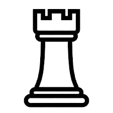

Cours 
Chess is played on a chess board, an 8 by 8 grid alternating colours between black and white. We say that this grid is composed by ranks(rows) and files(columns). Each rank is defined by a number and each column by a letter, thus creating coordinates for each square.
The pawn is a piece that moves one square forward at a time although it can move two squares on its first move to get straight into the action. The pawn captures other pieces one square diagonally and therefore can not move forwards if blocked by an other piece. Each side starts with 8 pawns and because of their slow movement, they're often used as walls.